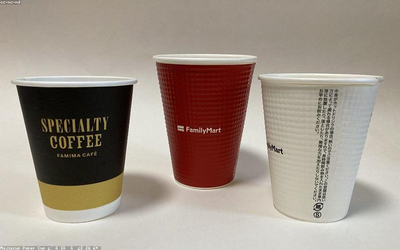
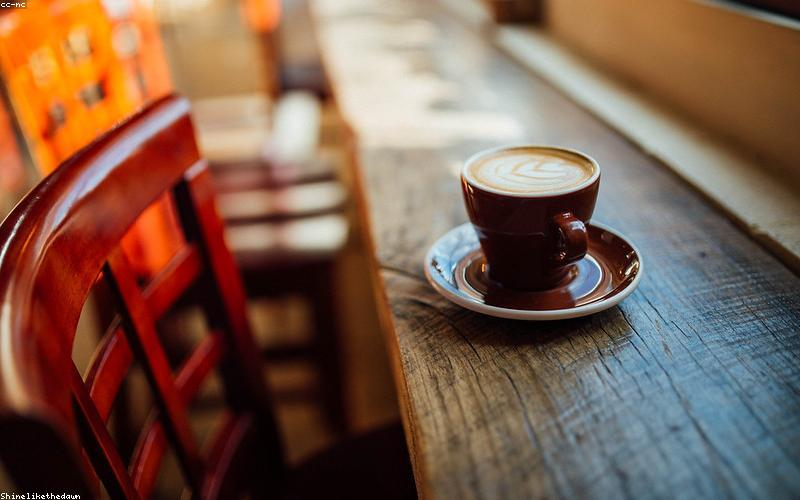
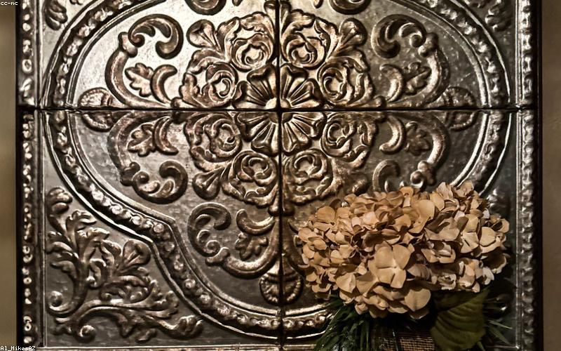
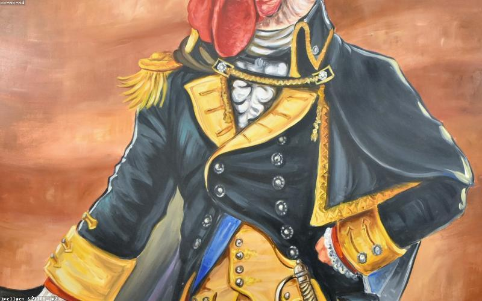
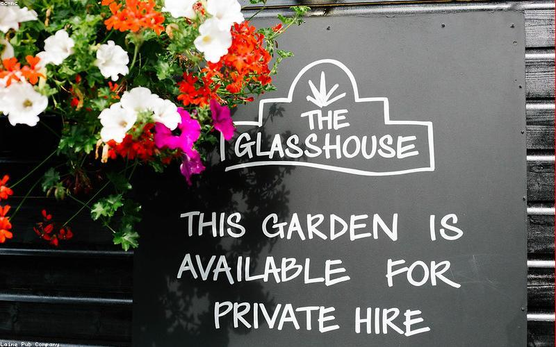
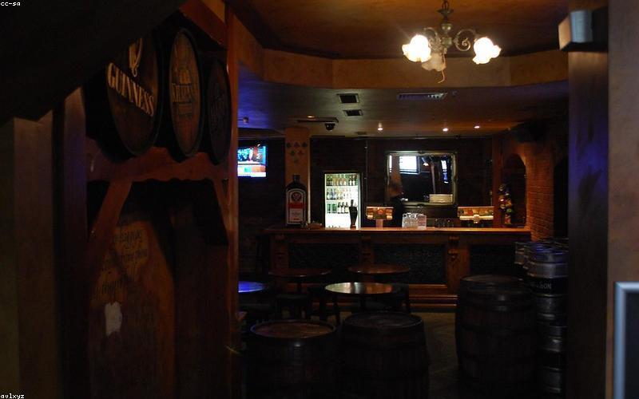
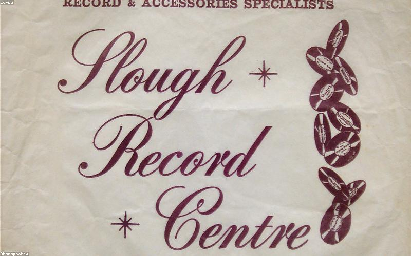
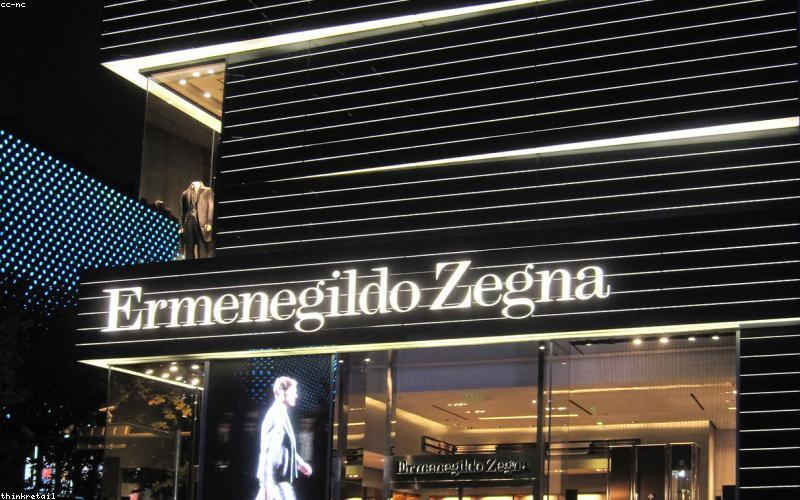

Places
Where to go,
what to do

Coffee
SOMA Coffee
Portobello Road / Rialto
Dublin's most design-forward roaster. SOMA operates their own roastery and multiple cafés; the Portobello area location is the one that fits the neighbourhood's character. Clean Nordic aesthetic, serious about single origins, the kind of place where the coffee is presented with the same intentionality as the space. Good filter options alongside espresso. One of the few Dublin roasters that could hold its own in London or Berlin without adjustment.
↗ MAPS

Coffee
Two Pups Coffee
Francis Street, Portobello
One of the best-loved neighborhood cafés in Dublin — Francis Street puts it in the heart of the Liberties, which bleeds into Portobello's southern edge. Known for excellent espresso and a genuinely welcoming atmosphere that avoids the austerity of some specialty spots. Strong food menu too. The kind of café that earns its regulars and doesn't need to advertise.
↗ MAPS

Coffee · Matcha
Tōkyō Café
Portobello area
Japanese-influenced café in Portobello — matcha done properly, clean presentation, a space that feels deliberately considered rather than trend-chasing. One of the rare Dublin spots where ordering matcha doesn't feel like a compromise. Also good for a slower morning sit when the canal walk is done.
↗ MAPS

Food
Kinara Kitchen
Ranelagh Road, edge of Portobello
Pakistani fine dining that's been a Dublin institution for years. The lamb karahi and the seekh kebabs are the moves. Not cheap, but genuinely excellent cooking — the kind of restaurant that makes you understand why Pakistani cuisine is one of the world's great food traditions. Reservations strongly recommended for evenings.
↗ MAPS

Food
Brother Hubbard South
Near Portobello
Middle-Eastern-influenced brunch and all-day dining. The Brother Hubbard family are among the best things to happen to Dublin's café culture. Creative dishes, quality ingredients, a room that feels good to be in. Best for weekend brunch or a long lunch when you're not in a rush.
↗ MAPS

Food
Assassination Custard
Kevin Street (near Portobello)
Tiny, inventive, entirely worth seeking out. Lunch-only, limited menu, changes daily — the kind of place that would be hard to find without knowing. Natural wines by the glass, small plates, cooking that punches well above its weight for the price.
↗ MAPS

Bar
Little Bird
Portobello
Cocktail bar with a South American soul — rum-forward drinks list, good amaro selection, the kind of bar that manages to be properly focused without being precious. One of the better cocktail spots in Dublin that isn't trying too hard. Good for an evening when you want to drink well without the noise of a big room.
↗ MAPS

Bar
The Bernard Shaw
South Richmond Street
The anchor of the Portobello bar scene for years — a large, rambling place with a beer garden, rotating food trucks (Big Blue Bus pizza is the constant), occasional outdoor gigs, and the kind of mixed crowd that Dublin's creative scene actually produces. Less polished than the cocktail bars but more alive. Best on a summer evening in the garden.
↗ MAPS

Bar
Grogan's Castle Lounge
South William Street
Dublin's most storied artist bar. Low stools, no music, walls hung with paintings by artists who paid their tabs in work. The regulars are a fixture. Toasted cheese sandwiches are the food offering — order one. A place that hasn't needed to change because it already understood what it was supposed to be.
↗ MAPS

Records
All City Records
Crow Street area
The hip-hop and electronic specialist. Vinyl-only, deep stock in house, techno, soul, and hip-hop. The staff know what's been pressed and what's worth having. If you're looking for something that's not jazz or city pop, this is the first stop. Strong Irish electronic scene coverage.
↗ MAPS

Menswear
Article Dublin
Drury Street, Creative Quarter
Dublin's best independent men's fashion boutique. Carries brands you won't find in department stores — Edwin, Norse Projects, Corridor, Gramicci. The kind of shop that curates rather than stocks. The people there dress well and know what they sell. Not Y-3 territory but the overlap with considered, quality-driven menswear is strong.
↗ MAPS
Market · Saturday
Cow's Lane Market
Cow's Lane, The Liberties
Saturday morning designers' market in a cobbled lane off Thomas Street. Irish designers, handmade clothing, ceramics, prints, jewellery. The quality varies but at its best it's the best access to what Irish design actually looks like. Worth combining with a Smithfield visit — both are north/west city and work as a morning circuit.
↗ MAPS